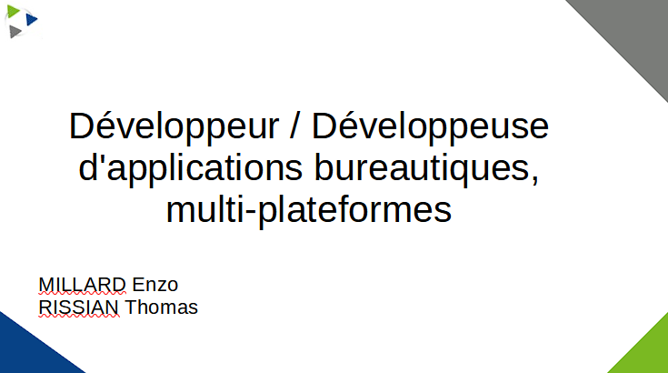

Découverte des métiers
Contexte :
Pendant un AP en groupe de 2, nous avions comme objectif de rechercher des informations sur un métier possible après le BTS SIO désigner par notre professeur. J’ai dû réaliser des recherches sur le métier de développeur d’applications bureautiques et multi-plateformes. Les informations de ce métier ont été renseignées au préalable dans une fiche de synthèse au format markdown donnée par notre professeur afin de suivre notre avancé et de pouvoir obtenir sa validation.
Cet oral était constitué de différente partie explicative de ce métier.
Nous avons pu expliquer nos recherches à l’oral à l’aide d’un diaporama comme support qui devait être contextualisé pour découvrir différents métiers de façon détaillée afin de pouvoir s’orienter vers la filière et le stage adéquat.

Environnement technologique :
- diaporama
- réalisation d’un thème libre office impress
- synthèse avec markdown
compétence mobilisée :
- B1.6.4 Développer son projet professionnel
Grâce à cette activité j'ai pu apprendre le rôle de certains métiers comme développeur full stack. Pour ma part cette activité m'a permis de me rapprocher de 2 métiers qui m’intéresse qui sont développeurs front-end et développeur d’application bureautique.